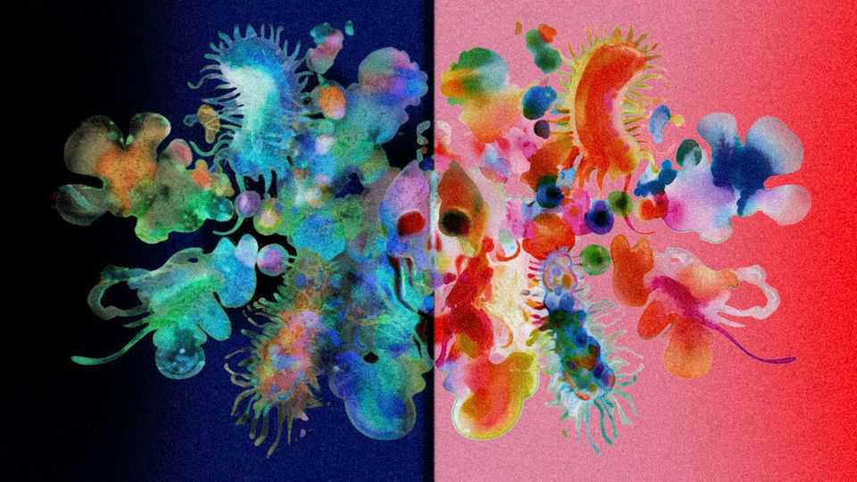

It may soon be possible to create “mirror life”
Such research poses risks for humanity and the planet

Oct 1st 2026
BIOLOGY IS HANDED. In other words, many molecules essential to living organisms come in two distinct forms which, like human hands, are non-identical mirror images of one another. For a lot of those molecules, though, life on Earth employs only one of the two possibilities.
Why this should be so is lost in evolutionary history. And, until recently, only evolutionary biologists cared. But that is changing. Although biotechnologists are not there yet, they can see on the horizon the possibility of synthesising biological cells from scratch. This has led some to wonder what might happen if someone tried to reverse life’s handedness and create a cell—probably a bacterium—that held a mirror to normal biochemistry.
The answer, discussed this week by a conclave of concerned biologists meeting at the Singapore Conference on Mirror Life, is potentially terrifying. If such an organism were to escape the confines of the lab it might create an unstoppable plague or devastate an entire ecosystem. Scientists are, therefore, keen to see what can be done to nip such research in the bud.
Life’s handedness—or chirality, to use the technical term—arises in part from molecules called amino acids, the building blocks of proteins (themselves the building blocks of bodies). They consist of one carbon atom attached to four other chemical entities: three are the same across all amino acids, but the fourth varies. The carbon atom’s bonds to these four add-ons form a roughly tetrahedral structure. That allows for each amino acid to be constructed in two mirror-symmetrical ways (unless the fourth entity is hydrogen, duplicating one of the permanent three).
A complicated and somewhat arbitrary chemical convention defines one of these arrangements as left-handed and the other as right-handed. By this definition life’s amino acids are generally left-handed. The opposite is true for sugar molecules (which, besides the many other jobs they do, form the backbones of the gene-carrying nucleic acids DNA and RNA). They are right-handed.
Fears of mirror life came to public attention in a paper published in Science at the end of 2024. At first sight, the idea of through-the-looking-glass creatures seemed like a curiosity rather than a threat. The paper’s authors begged to differ. The handedness of biomolecules is so deeply embedded into biological systems that their chiral opposites go largely unnoticed. A mirror version of a bacterium would thus, those authors posited, evade immune systems, human and non-human alike, and could reproduce unchecked.
Mirror bacteria could also, they noted, be indigestible to single-celled creatures, such as amoebae, that are the principal predators of bacteria, and resistant to the viruses, called bacteriophages, which also keep bacterial populations under control. It could, in other words, multiply indefinitely. Hence the risk to ecosystems.
Nature would push back a little. Mirror life would be unable to metabolise all the left-handed amino acids and right-handed sugars of the natural organisms it encountered, restricting its food supply. But lots of biomolecules have no handedness, and it could feed on them instead.
All this assumes mirror life could be made in the laboratory. With existing technology, that possibility is remote. But synthetic biology is advancing by leaps and bounds, and is accelerating as AI is applied to the process. Novel viruses of certain types can already be designed and synthesised from scratch. What in 2024 looked at least 15 years away may thus arrive sooner than expected.
Mirror organisms might be made in one of two ways: big bang or piecemeal. The big-bang arrival—the creation in a laboratory setting of a completely synthetic mirror cell—would first require a breakthrough in the synthesis of “ordinary” cells. The piecemeal approach would convert cells a bit at a time, perhaps running both biochemistries in parallel.
George Church of Harvard Medical School, one of the authors of the 2024 paper, pointed to two significant developments in these directions. One was a so-called spud cell (it looks like a potato) announced to the world in July by researchers at the University of Minnesota. It had seven tiny chromosomes (called plasmids), encoding 36 enzymes (a small bacterium has hundreds), inside a fatty membrane. Even so, it was able to feed, grow and undergo cell division. That is a step towards a proper synthetic cell.
The other development, at Dr Church’s own lab, was a modification of the way normal cells gather amino acids and assemble them into proteins. This can now be made to include non-standard (such as, in principle, right-handed) amino acids.
As to the reasons why anyone might want to make mirror life, there are two. One is scientific curiosity—the possibility of investigating why biology became handed in the first place. The other is that chiral molecules can be useful. Because bodies often do not recognise and destroy molecules with opposite chirality, they have longer periods of action as drugs. D-peptides and spiegelmers are, respectively, opposite-handed short-chain proteins and nucleic acids. D-peptide drugs already exist, and several spiegelmers are under test. But, as those very facts show, there are other ways to manufacture such molecules than invoking mirror life to do it.
As to curiosity, even though it proverbially killed the cat, letting it kill a proportion of the human race or harm some important ecosystem would be a bad bargain. Since its publication, therefore, the 2024 paper’s authors have been beavering away, spreading the message. They have had some success. Authorities in America, Britain and Germany have shown concern and in March the UN Secretary-General’s Scientific Advisory Board issued a briefing outlining the risks, though the government of another of the field’s big beasts, China, has yet to opine. The purpose of the meeting in Singapore was to move things along by coming up with recommendations for concrete action. These will be promulgated in a report to be issued in a few months’ time.
Dr Church foreshadowed some possible recommendations in his talk. One was extending to mirror life the scrutiny already applied to the business of DNA synthesis in order to stop people trying to make dangerous pathogens. Another was incentivising whistle-blowers. A third was to impose serious penalties, including prison time, on malefactors—as happened in China to a researcher who edited the DNA of human beings when they were embryos. But he also had some more controversial ideas, such as psychological evaluations for researchers in the field to weed out those likely to go off-piste.
Meanwhile, lest anyone have lingering doubts about the nature of the threat, Deepa Agashe, another of the 2024 paper’s authors, who is an ecologist and evolutionary biologist at the National Centre for Biological Sciences in Bengaluru, India, was there to disabuse them. She showed data on what was previously an unquantified point: the amount of achiral nutrients in soil, blood and the contents of the gut. Each of these habitats, she opined, would be able to support the well-studied bacterium E. coli without its needing to resort to chiral foodstuffs. And if E. coli could manage it, a mirror bacterium would probably be able to do likewise.
Dr Agashe also offered a telling analogy. She likened the lack of predators and pathogens a mirror organism might encounter to the experience of a successful invasive species, such as the neotropical cane toads that are running riot in Australia for lack of predators adapted to consume their toxic bodies. Such invaders can sometimes be controlled. They have never yet been eliminated.
Better, then, to act early, before the threat becomes tangible. At the moment, as was pointed out at the meeting, there are no vested economic interests involved to sway business lobbies, nor strategic ones to sway governments. Moreover, anyone sane can see that a bioweapon based on mirror life would be uncontrollable, and therefore unusable. Not everyone is sane, of course—a point that gives weight to Dr Church’s thoughts about psychological evaluation. All the same, the warnings from Singapore present an opportunity to avert catastrophe before it is too late. ■
Correction (October 1st 2026): The original version of this article wrongly stated that the American government had yet to show concern.